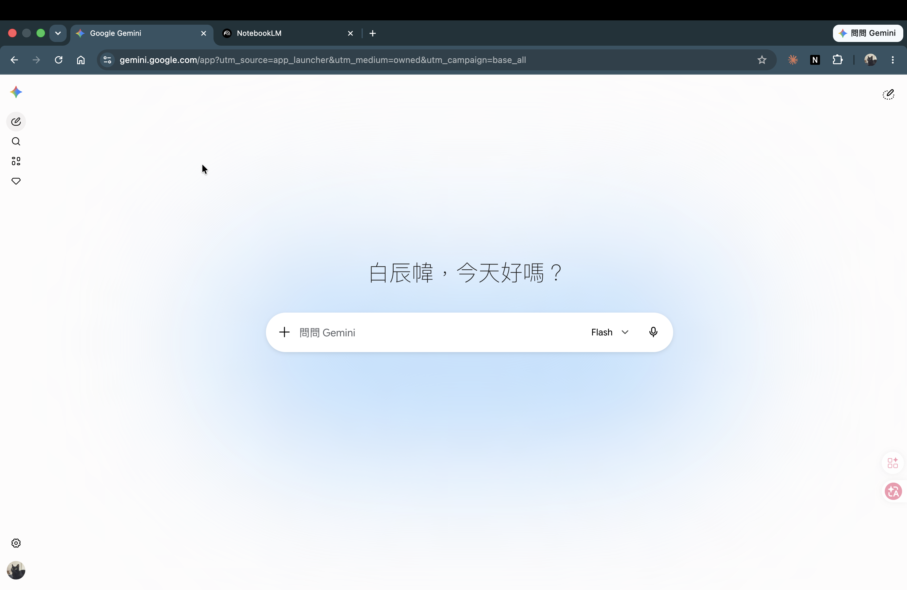
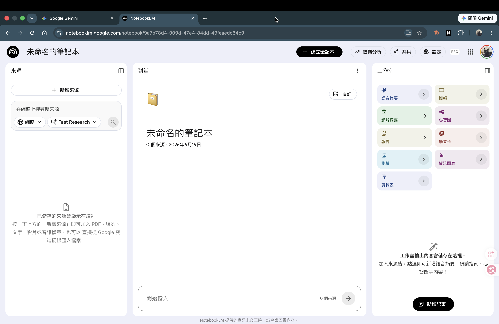

雙工具環境設定 + 基礎認識
50 分鐘把兩個工具都打開、搞清楚差異在哪，再對同一個問題各問一次親眼看到不同。完全沒碰過這兩個工具也沒關係，今天從零開始，一步一步來。
破題：從一個真實卡點開始
業務副理小李用了兩週 Gemini，每次要問業績數字、或者找公司 SOP 的規定，他發現：
- 問 Gemini，答案聽起來很順，但他不確定數字是真的還是 AI 自己編的
- 朋友叫他用 NotebookLM，他打開來一看，介面完全不同，不知道從哪裡開始
他卡在這裡。這 50 min 幫你解決這個卡點。
環境確認：兩個工具都打開（15 min）
Gemini 環境確認（7 min）
打開瀏覽器，網址輸入：gemini.google.com
用 Google 帳號登入（公司 Google Workspace 帳號或個人 Gmail 都可以）。
如果公司帳號看到「無法使用此功能」：換個人 Gmail 帳號登入，今天先用個人帳號操作，確認工具用法後再跟公司資訊部確認授權。
跟著做這四步，感受一下回應怎麼出現：
- 點左側側欄的「新對話」
- 在畫面最下方的對話框輸入任何一句話
- 按送出（Enter 或對話框右側的箭頭）
- 看回應一個字一個字跑出來

| 位置 | 在哪裡 | 用途 |
|---|---|---|
| 對話框 | 畫面最下方 | 輸入你的 prompt（指令） |
| 新對話 | 左側側欄上方 | 開一個全新對話（清空記憶） |
| 上傳按鈕 | 對話框左側的 📎 或 ＋ 圖示 | 上傳檔案（PDF / 文件 / 圖片） |
在對話框輸入以下這句，送出後能看到回覆 = 環境正常，繼續。
NotebookLM 環境確認（8 min）
網址：notebooklm.google.com
同一個 Google 帳號登入。
如果看到「此帳戶無法使用」：通常是公司帳號有限制。做法同 Gemini，先換個人 Gmail，今天先把流程走過一遍。
NotebookLM 的介面和 Gemini 完全不同，先看地圖再操作：

| 區塊 | 位置 | 做什麼用 |
|---|---|---|
| Notebook 列表 | 首頁中央 | 你建立的每一個「知識庫」都是一個 notebook |
| 來源（Sources） | 進入 notebook 後的左側欄 | 你上傳的每一份文件都在這裡 |
| 對話（Chat） | 中央主區 | 對你上傳的文件問問題 |
| 工作室（Studio） | 右側欄 | 生成語音摘要 / 報告（含簡介文件、研讀指南）/ 心智圖等功能 |
- 點首頁的「建立新的筆記本（New notebook）」
- 把名字改成「CH0 練習」
- 看到空的 notebook 畫面 = 建立完成
先不上傳任何文件，只是確認能打開就好。
常見卡點快速排除
| 卡點 | 最快解法 |
|---|---|
| 帳號登入失敗（公司帳號） | 先換個人 Gmail，課後跟公司資訊部確認 |
| 在手機上操作 | 這兩個工具在電腦瀏覽器上最好用，今天先切到電腦 |
| Gemini 一直轉圈不回覆 | 重新整理頁面、確認網路連線、換 Chrome 試試 |
| NotebookLM 顯示英文介面 | 正常，功能和中文版一樣；若要切換：帳號設定 → 語言 |
| 看不到 NotebookLM 的中文 | 問題和 Sources 可以用中文輸入，介面語言不影響 |
兩工具基本差異（12 min）
一句話原則（先記住再看範例）
| 工具 | 一句話原則 |
|---|---|
| Gemini | 你問什麼，它就回什麼。沒有資料時，它會自己補充——補充的內容可能不準。 |
| NotebookLM | 你上傳什麼，它就只根據那些資料回答。沒上傳，就不答。 |
為什麼會有這個差異？（2 分鐘解釋）
不重講 AI 原理，只需要記住這個比喻：
- Gemini 像一個讀過非常多書的助理——你問它問題，它從記憶裡找答案，找不到的地方它會「合理推估」。推估聽起來很合理，但不一定是你公司的實際情況。
- NotebookLM 像一個只讀你給它的文件的助理——你不給它文件，它沒東西讀，就說「不知道」。你給它文件，它從那些文件找答案，找到了會標出來源。
哪個比較「聰明」？不是問題所在。 問題是：你要的答案，資料在哪裡？
| 你要做的事 | 資料在哪 | 用哪個 |
|---|---|---|
| 改寫文案、生成初稿、改語氣 | AI 的訓練資料裡 | Gemini |
| 查 SOP、核業績數字、找會議決議 | 你上傳的文件裡 | NotebookLM |
舉一個行銷的對比就很清楚：問「幫我寫一篇開幕活動的社群貼文」——這是要 AI 生內容，沒有公司內部資料也能寫，用 Gemini；問「我們上季的社群貼文觸及率是多少」——這個數字只存在你公司的後台報表裡，要把報表上傳到 NotebookLM 才問得到。
- 幫我寫一封給客戶的道歉信
- 公司請假要幾天前申請？
- 這份 50 頁合約裡，違約金條款怎麼寫？
- 把這段銷售話術改得更有說服力
- 根據公司 SOP 寫一份「對外報價公告」初稿
- 上季活動的社群觸及率是多少，幫我整理成一段彙報
查看答案
1. Gemini——生成新內容，不靠你的文件。
2. NotebookLM——答案在你上傳的規章裡。
3. NotebookLM——查你上傳的合約文件原文。
4. Gemini——改寫，不需公司資料。
5. 兩者串接——先用 NotebookLM 查 SOP 的報價規定（有來源），再用 Gemini 寫成公告初稿。
6. 兩者串接——NotebookLM 查活動數據、Gemini 整合成彙報段落。
判斷口訣：答案在你文件裡 → NotebookLM；要它生／改內容 → Gemini；既要你的資料、又要它幫你寫 → 兩者串接。
給 AI 下指令時，辦公室最常用的講法就三件：角色 + 任務 + 格式（要它扮什麼身分、做什麼事、輸出成什麼樣子）。今天在 Gemini 裡就是這樣用，本課不細教，CH1-2 會用這個骨架示範。
操作示範：同一個問題分問兩個工具（12 min）
下面用同一個問題，分別問 Gemini 和 NotebookLM，看兩邊的回答差在哪。
問題：小李想知道「弄一下精選商行 12 月電商業績大概多少」。
Demo A — 在 Gemini 問（沒有上傳任何資料）
依台灣中型電商產業平均水準，12 月（雙 12 + 年末檔期）通常是全年旺季，業績較 11 月成長 15–25%。
若以一般中型電商月營收 200–500 萬計算，估計落在 230–625 萬區間。建議參考前三個月趨勢做更精確推估。
Demo B — 在 NotebookLM 問（沒有上傳任何 source）
I'm unable to answer this question. I can only provide information that is directly supported by the sources in this notebook.
Please add sources related to your query to get an answer.
Demo C — 在 NotebookLM 上傳一份 source 後再問
把一份文件丟進去，NotebookLM 就答得出來——而且每句都有出處。下載這份示範 SOP 跟著做：
依供應商管理辦法，供應商分三級：A 級（年採購額 ≥ 300 萬，或關鍵、獨家、無替代來源料件）、B 級（50–300 萬）、C 級（< 50 萬）。[1]
你要快速了解業界行情、生成初稿 → Gemini 回答的有用
你要知道弄一下精選商行自己的業績 → 那個數字不存在於 Gemini，要去 NotebookLM 上傳訂單資料才有
動手練習：每人試一次（5 min）
想一個你上週工作中真的有的問題（例：「我們這個月業績達成率是多少」「採購的付款條件是幾天」「我們的請假流程是什麼」）。
截圖或記下它給的答案。
在沒上傳任何文件的狀態下問。記下它的回應。
Gemini 給了什麼？NotebookLM 說了什麼？哪個答案你比較能用？這不是對錯題，沒有標準答案。目的是親眼看到這兩個工具確實不一樣。
你能講出一句「同一個問題，Gemini 給了___，NotebookLM 因為沒上傳文件所以說___」——填得出這兩個空格 = 練習過關。
免費版限制說明（5 min）
這些是免費版在哪裡會卡住。今天不需要全部記住，遇到再查。
Gemini 免費版主要限制
| 限制 | 說明 |
|---|---|
| 輸入長度上限 | 約 32K token（中文大概 16K 字 / 30 頁 A4）。超過這個長度的文件，它只讀前段，但它不會告訴你它沒讀完。 |
| 上傳檔案格式 | 支援 PDF / Google Docs / 圖片 / 部分 Office 格式，不支援 .xls 舊格式 |
| 每日使用次數 | 免費版有上限，大量使用時可能遇到「今日已達上限」 |
對策：超過 30 頁的文件要找資料，改用 NotebookLM。
NotebookLM 免費版主要限制
| 限制 | 說明 |
|---|---|
| 每個 notebook 最多 source 數 | 約 50 個（2026-Q2 值，官方可能調整） |
| 每個 source 最大容量 | 約 500K token / 每份文件 |
| Notebook 總數 | 免費版有上限，超過要刪舊的或整併 |
對策：一個 notebook 放一個主題的文件（不要什麼都塞同一個），CH1-3 會教怎麼規劃。
開課前準備
這個單元只要兩個工具打得開就能跟上，不需要上傳任何檔案——示範和動手題都用你自己想得到的問題。
先準備好這些：
- Gemini 免費版（任一 Google 帳號，個人 Gmail 也可以）
- NotebookLM 免費版（用同一個 Google 帳號登入）
- 上課前一週，先在公司電腦確認兩個都打得開；如果公司帳號被擋，先備好個人 Gmail
常見錯誤 3 條
檢核題 2 條
查看答案
查看答案與解析
正確答案：B。180 頁已超過 Gemini 免費版 32K token（約 30 頁）上限，直接丟 Gemini 只會讀前段（A 的問題）。NotebookLM 的 source 上限約 500K token / 份，容得下 180 頁 PDF，且引用標記讓你確認哪個供應商的數字是從哪一頁來的。C 得到的是業界均價不是這份報價表的數字。D 只讀了前 10 頁，後段更便宜的供應商可能被漏掉。
離場自查卡（打勾）
- 我已經打開 Gemini，能看到對話框、知道「新對話」在哪裡
- 我已經打開 NotebookLM，建立了一個 notebook，看得到來源 / 對話 / 工作室三個區塊
- 我能用一句話說出 Gemini 和 NotebookLM 最核心的差異（一個補充、一個只讀你給的）
- 我問了同一個問題，看到兩個工具回應不一樣
- 我記得「32K token 超過 30 頁改用 NotebookLM」這條實用原則
打勾 ≥ 4 條 = 過，可進 CH1-1。